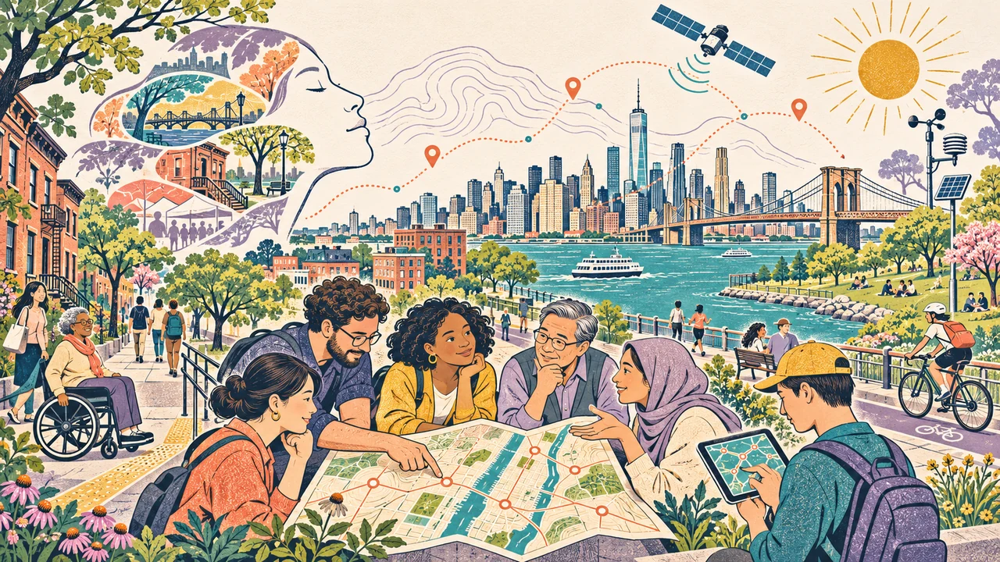
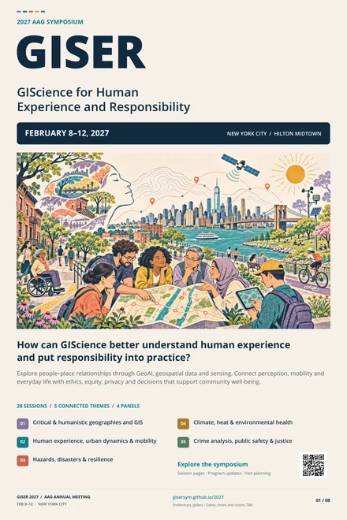
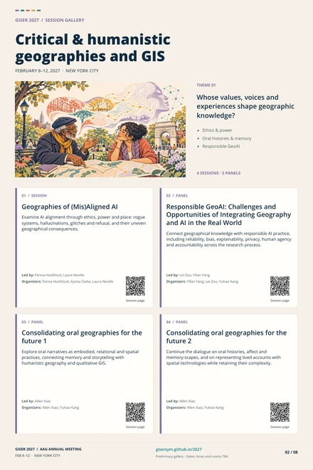
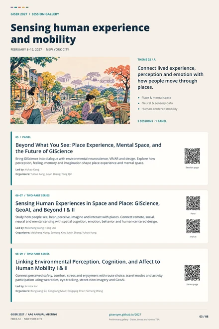
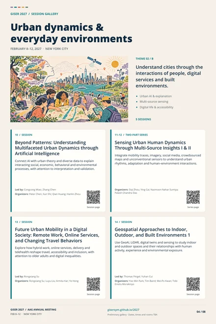
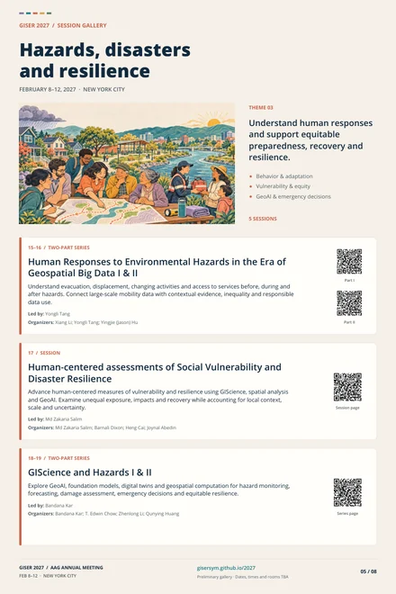
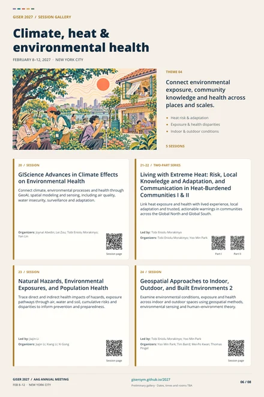
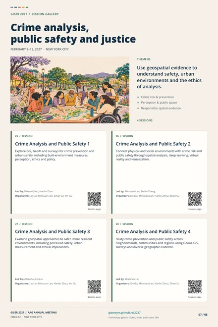
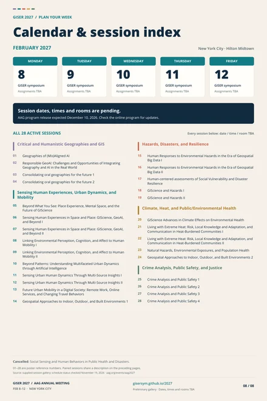

2027 AAG Symposium
GISER GIScience for Human Experience and Responsibility
–Hilton Midtown, New York City

Session guide
28 sessions across 5 themes, including 4 panels
How can GIScience better understand human experience and put responsibility into practice? These sessions explore how people perceive and move through places, and how geospatial research can support equity, privacy, and community well-being.
Critical and Humanistic Geographies and GIS
Whose values, voices and experiences shape geographic knowledge?
01 Geographies of (Mis)Aligned AI
Examine AI alignment through ethics, power and place: rogue systems, hallucinations, glitches and refusal, and their uneven geographical consequences.
- Led by
- Fenna Hoefsloot, Laura Neville
- Organizers
- Fenna Hoefsloot, Ayona Datta, Laura Neville
02 Responsible GeoAI: Challenges and Opportunities of Integrating Geography and AI in the Real World Panel
Connect geographical knowledge with responsible AI practice, including reliability, bias, explainability, privacy, human agency and accountability across the research process.
- Led by
- Lei Zou, Yifan Yang
- Organizers
- Yifan Yang, Lei Zou, Yuhao Kang
03 Consolidating oral geographies for the future 1 Panel
Explore oral narratives as embodied, relational and spatial practices, connecting memory and storytelling with humanistic geography and qualitative GIS.
- Led by
- Allen Xiao
- Organizers
- Allen Xiao, Yuhao Kang
04 Consolidating oral geographies for the future 2 Panel
Continue the dialogue on oral histories, affect and memory-scapes, and on representing lived accounts with spatial technologies while retaining their complexity.
- Led by
- Allen Xiao
- Organizers
- Allen Xiao, Yuhao Kang
Sensing Human Experiences, Urban Dynamics, and Mobility
Sensing human experience and mobility
Connect lived experience, perception and emotion with how people move through places.
05 Beyond What You See: Place Experience, Mental Space, and the Future of GIScience Panel
Bring GIScience into dialogue with environmental neuroscience, VR/AR and design. Explore how perception, feeling, memory and imagination shape place experience and mental space.
- Led by
- Yuhao Kang
- Organizers
- Yuhao Kang, Jiayin Zhang, Tong Qin
06 Sensing Human Experiences in Space and Place: GIScience, GeoAI, and Beyond I
Study how people see, hear, perceive, imagine and interact with places. Connect remote, social, neural and mental sensing with spatial cognition, emotion, behavior and human-centered design.
- Led by
- Meicheng Xiong, Tong Qin
- Organizers
- Meicheng Xiong, Somang Kim, Jiayin Zhang, Yuhao Kang
07 Sensing Human Experiences in Space and Place: GIScience, GeoAI, and Beyond II
Study how people see, hear, perceive, imagine and interact with places. Connect remote, social, neural and mental sensing with spatial cognition, emotion, behavior and human-centered design.
- Led by
- Meicheng Xiong, Tong Qin
- Organizers
- Meicheng Xiong, Somang Kim, Jiayin Zhang, Yuhao Kang
08 Linking Environmental Perception, Cognition, and Affect to Human Mobility I
Connect perceived safety, comfort, stress and enjoyment with route choice, travel modes and activity participation using wearables, eye-tracking, street-view imagery and GeoAI.
- Led by
- Armita Kar
- Organizers
- Rongxiang Su, Congcong Miao, Qingqing Chen, Sicheng Wang
09 Linking Environmental Perception, Cognition, and Affect to Human Mobility II
Connect perceived safety, comfort, stress and enjoyment with route choice, travel modes and activity participation using wearables, eye-tracking, street-view imagery and GeoAI.
- Led by
- Armita Kar
- Organizers
- Rongxiang Su, Congcong Miao, Qingqing Chen, Sicheng Wang
Urban dynamics & everyday environments
Understand cities through the interactions of people, digital services and built environments.
10 Beyond Patterns: Understanding Multifaceted Urban Dynamics through Artificial Intelligence
Connect AI with urban theory and diverse data to explain interacting social, economic, behavioral and environmental processes, with attention to interpretation and validation.
- Led by
- Congcong Miao, Zhang Chen
- Organizers
- Peter Chen, Xun Shi, Qian Huang, Hanlin Zhou
11 Sensing Urban Human Dynamics Through Multi-Source Insights I
Integrate mobility traces, imagery, social media, crowdsourced maps and unconventional sensors to understand urban rhythms, adaptation and human–environment interactions.
- Organizers
- Siqi Zhou, Ying Cai, Nazmoon Nahar Sumiya, Palash Chandra Das
12 Sensing Urban Human Dynamics Through Multi-Source Insights II
Integrate mobility traces, imagery, social media, crowdsourced maps and unconventional sensors to understand urban rhythms, adaptation and human–environment interactions.
- Organizers
- Siqi Zhou, Ying Cai, Nazmoon Nahar Sumiya, Palash Chandra Das
13 Future Urban Mobility in a Digital Society: Remote Work, Online Services, and Changing Travel Behaviors
Explore how hybrid work, online services, delivery and telehealth reshape travel, accessibility and inclusion, with attention to older adults and digital inequalities.
- Led by
- Rongxiang Su
- Organizers
- Rongxiang Su, Luyu Liu, Armita Kar, Ye Hong
14 Geospatial Approaches to Indoor, Outdoor, and Built Environments 1
Use GeoAI, LiDAR, digital twins and sensing to study indoor and outdoor spaces and their relationships with human activity, experience and environmental exposure.
- Led by
- Thomas Pingel, Yuhan Cui
- Organizers
- Yoo Min Park, Tim Baird, Mei-Po Kwan, Tobi Eniolu Morakinyo
Hazards, Disasters, and Resilience
Understand human responses and support equitable preparedness, recovery and resilience.
15 Human Responses to Environmental Hazards in the Era of Geospatial Big Data I
Understand evacuation, displacement, changing activities and access to services before, during and after hazards. Connect large-scale mobility data with contextual evidence, inequality and responsible data use.
- Led by
- Yongli Tang
- Organizers
- Xiang Li, Yongli Tang, Yingjie (Jason) Hu
16 Human Responses to Environmental Hazards in the Era of Geospatial Big Data II
Understand evacuation, displacement, changing activities and access to services before, during and after hazards. Connect large-scale mobility data with contextual evidence, inequality and responsible data use.
- Led by
- Yongli Tang
- Organizers
- Xiang Li, Yongli Tang, Yingjie (Jason) Hu
17 Human-centered assessments of Social Vulnerability and Disaster Resilience
Advance human-centered measures of vulnerability and resilience using GIScience, spatial analysis and GeoAI. Examine unequal exposure, impacts and recovery while accounting for local context, scale and uncertainty.
- Led by
- Md Zakaria Salim
- Organizers
- Md Zakaria Salim, Barnali Dixon, Heng Cai, Joynal Abedin
18 GIScience and Hazards I
Explore GeoAI, foundation models, digital twins and geospatial computation for hazard monitoring, forecasting, damage assessment, emergency decisions and equitable resilience.
- Led by
- Bandana Kar
- Organizers
- Bandana Kar, T. Edwin Chow, Zhenlong Li, Qunying Huang
19 GIScience and Hazards II
Explore GeoAI, foundation models, digital twins and geospatial computation for hazard monitoring, forecasting, damage assessment, emergency decisions and equitable resilience.
- Led by
- Bandana Kar
- Organizers
- Bandana Kar, T. Edwin Chow, Zhenlong Li, Qunying Huang
Climate, Heat, and Public/Environmental Health
Connect environmental exposure, community knowledge and health across places and scales.
20 GIScience Advances in Climate Effects on Environmental Health
Connect climate, environmental processes and health through GeoAI, spatial modeling and sensing, including air quality, water insecurity, surveillance and adaptation.
- Organizers
- Joynal Abedin, Lei Zou, Tobi Eniolu Morakinyo, Yan Lin
21 Living with Extreme Heat: Risk, Local Knowledge and Adaptation, and Communication in Heat-Burdened Communities I
Link heat exposure and health with lived experience, local adaptation and trusted, actionable warnings in communities across the Global North and Global South.
- Led by
- Tobi Eniolu Morakinyo
- Organizers
- Tobi Eniolu Morakinyo, Yoo Min Park
22 Living with Extreme Heat: Risk, Local Knowledge and Adaptation, and Communication in Heat-Burdened Communities II
Link heat exposure and health with lived experience, local adaptation and trusted, actionable warnings in communities across the Global North and Global South.
- Led by
- Tobi Eniolu Morakinyo
- Organizers
- Tobi Eniolu Morakinyo, Yoo Min Park
23 Natural Hazards, Environmental Exposures, and Population Health
Trace direct and indirect health impacts of hazards, exposure pathways through air, water and soil, cumulative risks and disparities to inform prevention and preparedness.
- Led by
- Jiajin Li
- Organizers
- Jiajin Li, Xiang Li, Xi Gong
24 Geospatial Approaches to Indoor, Outdoor, and Built Environments 2
Examine environmental conditions, exposure and health across indoor and outdoor spaces using geospatial methods, environmental sensing and human–environment theory.
- Led by
- Tobi Eniolu Morakinyo, Yoo Min Park
- Organizers
- Yoo Min Park, Tim Baird, Mei-Po Kwan, Thomas Pingel
Crime Analysis, Public Safety, and Justice
Use geospatial evidence to understand safety, urban environments and the ethics of analysis.
25 Crime Analysis and Public Safety 1
Explore GIS, GeoAI and surveys for crime prevention and urban safety, including built-environment measures, perception, ethics and policy.
- Led by
- Debao Chen, Hanlin Zhou
- Organizers
- Lin Liu, Minxuan Lan, Zihan Su, Xin Gu
26 Crime Analysis and Public Safety 2
Connect physical and social environments with crime risk and public safety through spatial analysis, deep learning, virtual reality and visualization.
- Led by
- Minxuan Lan, Senlin Zheng
- Organizers
- Lin Liu, Minxuan Lan, Hanlin Zhou, Zihan Su
27 Crime Analysis and Public Safety 3
Examine geospatial approaches to safer, more resilient environments, including perceived safety, urban measurement and ethical implications.
- Led by
- Zihan Su, Lin Liu
- Organizers
- Lin Liu, Minxuan Lan, Hanlin Zhou, Xin Gu
28 Crime Analysis and Public Safety 4
Study crime prevention and public safety across neighborhoods, communities and regions using GeoAI, GIS, surveys and diverse geographic evidence.
- Led by
- Zhenhao He
- Organizers
- Xin Gu, Minxuan Lan, Hanlin Zhou, Zihan Su
Illustrated posters
Open a poster in the print-resolution PDF. Session numbers match the guide above.
-

Symposium overview -

Critical and humanistic geographies -

Human experience and mobility -

Urban dynamics and everyday environments -

Hazards, disasters, and resilience -

Climate, heat, and environmental health -

Crime analysis, public safety, and justice -

Calendar and complete session index